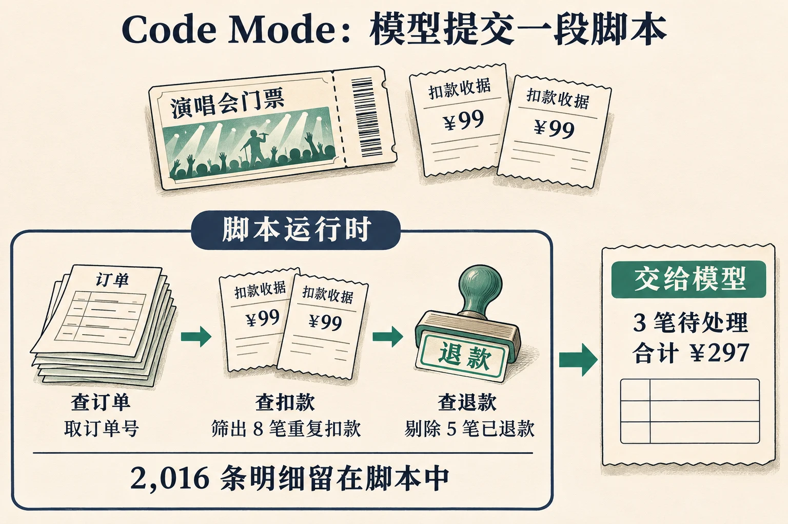
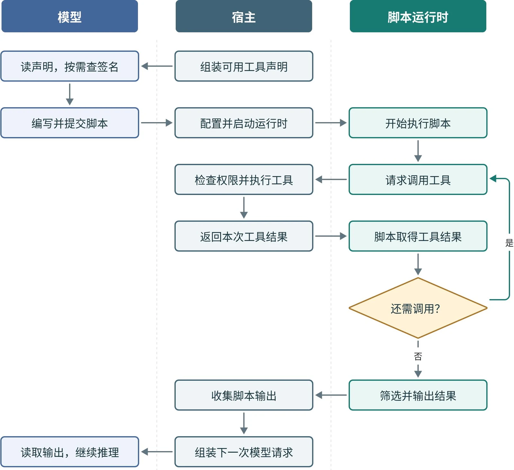
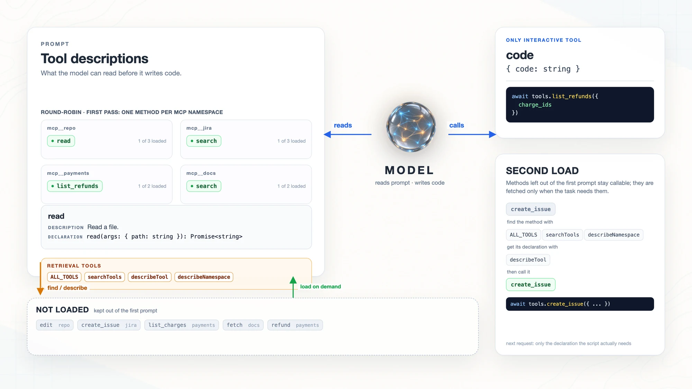
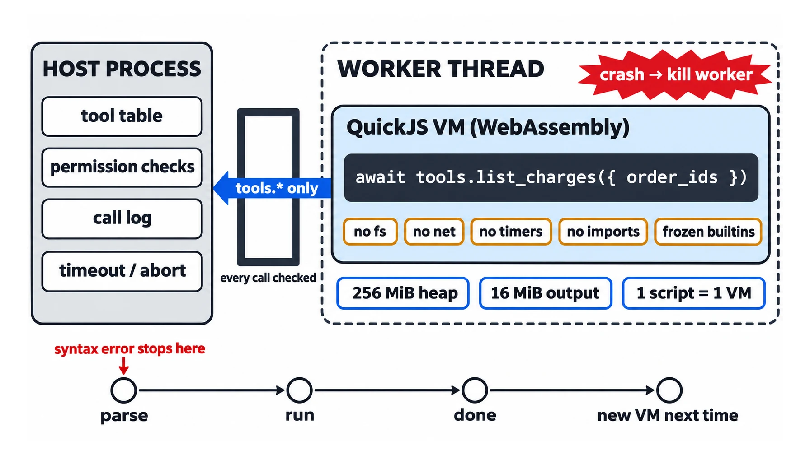
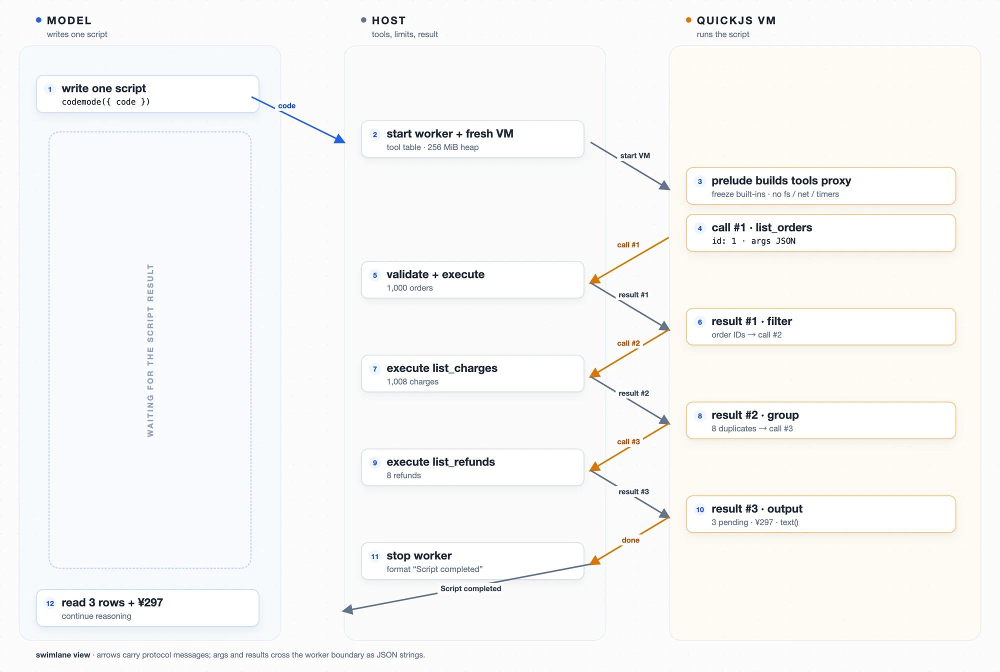
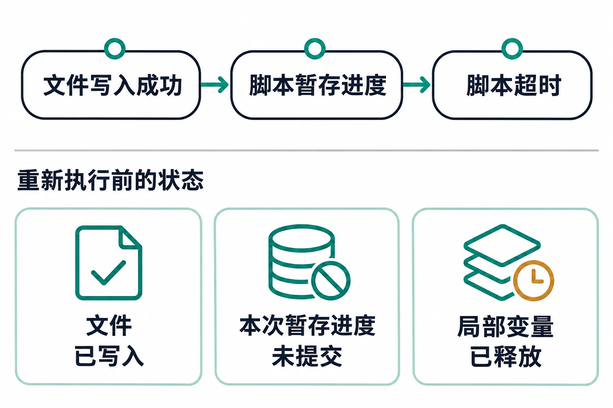

Pi Code Mode 工作原理
本篇从售票对账案例出发，介绍 Pi Code Mode 如何用一个 code 工具承载工具调用，以及 QuickJS 沙箱、按需加载和宿主通信的机制。
背景
“我只买了一张 99 元的演唱会门票，为什么被扣了两次款？”客服收到投诉后，请助手查昨晚整场售票：还有哪些订单多扣了钱，而且没有退回来？
假设每单一张票。助手有三个支持批量查询的只读工具：按场次查订单、按订单号查扣款、按扣款流水号查退款。直接调用这三个工具，模型要参与三轮。
- 查订单。 订单工具返回 1,000 条订单记录。模型从中取出订单号，才能查询对应的扣款。
- 查扣款。 支付工具返回 1,008 条成功扣款记录。按订单号分组后，发现 8 个订单各被扣了两次 99 元。模型取出这 8 笔多扣款项的流水号。
- 查退款。 退款工具返回 8 条状态。5 笔已成功退款，剩下 3 笔需要核对，合计 297 元。
三步的先后顺序不能变，传递编号和筛选记录的规则却可以事先写好。Code Mode 让模型一次提交一段脚本：脚本把订单号传给支付工具，筛出重复扣款，再把对应流水号传给退款工具。
Only the script's output reaches the model, so a script can run calls in parallel and filter large results before the model sees them.
译文：只有脚本输出会送达模型，因此脚本可以并行发起调用，也可以在模型看到结果之前筛选大量数据。〔Pi 官方文档，v1.5.2〕

同样查询三个业务工具，模型发起调用从三轮减到一轮。 2,016 条中间明细留在脚本里，模型只读 3 笔待处理记录和 297 元的合计。两种方式最后都还需要模型根据结果答复客服。
调用流程
Code Mode 主要包含模型、宿主和脚本运行时三个身份。宿主管理会话和工具，运行时执行模型写的脚本。

- 提供工具。 宿主列出可用工具。模型读取名称、参数和返回约定，缺少签名时再查找。
- 启动脚本。 模型提交代码。宿主准备运行环境、注入工具入口，并设置权限与资源限制。
- 执行调用。 脚本把工具名和参数交给宿主。宿主校验并执行，结果先回脚本。脚本可以用这个值继续调用其他工具。
- 交回模型。 脚本选出要输出的内容。宿主把输出和执行状态放进下一次模型请求，模型据此继续判断。
基于流程我们继续深入研究 Code Mode 中的三个问题：
- 模型是如何感知到工具定义
- 工具运行环境需要提供什么能力
- 工具运行环境与宿主之间如何通信，协议是什么
核心机制
这一章拆三个问题：模型怎样知道有哪些工具、脚本在什么环境里执行、VM 与宿主之间怎样通信和回传结果。实现以 Pi v1.5.2 的 codemode 为例，不再并列其他实现。
工具声明

only 模式下，请求的工具字段只有 codemode（下文简称 code），schema 是 { code: string }。业务工具不以独立 schema 出现；模型要查订单、读文件、发退款，只能写脚本，在脚本里调用 tools.<name>(args)。
系统提示词给出工具清单和调用规则，code 的工具描述承载 TypeScript 声明。两者都是文本，不是每个业务工具一条独立 schema；宿主每轮从可调用工具里按 MCP namespace 分组（例如 mcp__payments），把每个方法渲染成“说明 + guidelines + TypeScript 声明”的小节，再用字符数除以 4 估算 token，装进 3,000 token 的预算。
预算不够时不是截断，而是按 namespace 轮流选取：每一轮每个组各放一条最短的声明，放不下的组退出，其他组继续。这样每个 MCP namespace 先在提示词里有一个方法，再谈列全；没列全的方法标上 “some tools not listed”，仍然可调用，但进入未加载池，等第二次加载。
一条声明的最小结构就是三行：标题、说明、类型。例如：
### `list_refunds`
List refunds for the given charges.
list_refunds(args: { charge_ids: string[] }): Promise<Refund[]>标题是脚本里的标识符，说明来自工具 description 和 guidelines，类型由 JSON Schema 生成；参数 schema 超过约 16,000 字符时降级为 unknown。
按需加载
所以提示词里只是第一轮装入的一部分方法，未列出的保持“未加载”；需要时通过四个入口二次加载。提示词里会说明这四个入口；它们不是模型侧的工具，而是 code 运行时里的常量和异步函数。它们负责把未加载的工具找出来，并把声明带进上下文：
| 入口 | 调用形态 | 返回什么 |
|---|---|---|
| ALL_TOOLS | 直接读 | { name, description }[]；description 含完整声明 |
| searchTools | await searchTools(query, { limit?, namespace? }) | BM25 排序的 { name, description }[]，默认 8 条 |
| describeTool | await describeTool(name) | 单个工具的说明和声明；找不到返回 undefined |
| describeNamespace | await describeNamespace(name) | { name, description?, instructions?, tools: string[] } |
渐进式加载就是这条路径：先用 ALL_TOOLS 或 searchTools 找名字，需要完整声明时用 describeTool，最后用 tools.<name> 调用；只知道 server 时，先 describeNamespace 拿名单。searchTools 和 ALL_TOOLS 的 description 已经包含声明，describeTool 可以按需省略。
const hits = await searchTools("refund", { namespace: "payments" });
const refunds = await tools[hits[0].name]({ charge_ids });列出的工具直接可用，没列出的按需检索；既不让 3,000 token 的提示词塞满所有工具，也不让模型失去调用它们的能力。
执行环境
模型提交代码后，宿主不会在主进程里直接执行。Pi 为每次执行启动一个工作线程，在线程里新建一个 QuickJS 虚拟机；QuickJS 编译成 WebAssembly，是独立的 wasm 实例。脚本结束、超时、取消或崩溃，宿主终止这个 worker，下一次脚本重新来过。
两层隔离各解决一个问题。worker 把同步执行的 QuickJS 挡在主线程之外，死循环不会卡住会话的事件循环；独立的 wasm 实例让每次执行的堆、全局对象和变量都不共享，终止后不会污染下一次。宿主的工具表、调用记录、截止时间和取消信号都在 VM 之外。
虚拟机里有什么，没有什么
| 脚本可用的接口 | 用途 | 边界 |
|---|---|---|
| tools.name(args) | 调用一个工具，返回 Promise | 唯一的外部能力入口，必须经宿主 |
| ALL_TOOLS、searchTools、describeTool、describeNamespace | 发现可调用工具 | 只读，不改变工具字段 |
| text、image、console、exit、return | 产出回传给模型的输出 | 只影响本次结果，不写文件 |
| store、load | 跨脚本保存小段 JSON | 只有成功结束的脚本才提交 |
| models（可选） | 分类与图片生成 | 仍走宿主的模型注册表 |
脚本里没有 require、import、process、fs、net、fetch、setTimeout 或 setInterval。不是把这些 API 禁用，而是根本没有注入；QuickJS 也没有 Node 绑定。内建对象在脚本运行前被冻结，全局属性改为只读，宿主桥接函数藏在闭包里，脚本拿不到。
所以权限模型是“默认没有，按需借出”。脚本没有文件系统、网络、进程或定时器权限；对外部世界，唯一能做的是调用 tools.*，以及可选的 models。每次调用回到宿主，走和直接调用相同的参数校验、钩子和权限检查；文件写入、网络请求由宿主工具执行，并继续受本次会话的沙箱策略约束。VM 不判断“能不能”，只负责发请求。
脚本规范
- 输入是原始 JavaScript，不是 JSON，也不要 Markdown 代码围栏；整段作为 async 函数体执行。
- 顶层可以用 await 和 return；没有模块、没有 import；工具调用返回 Promise。
- 需要并发时用 Promise.all 或 Promise.allSettled；失败项用 allSettled 保留成功结果。
- 第一行可以写 // @options: {"max_output_tokens":2000,"timeout_ms":60000}；写在其他行会让调用在运行前失败。
- 输出用 text()、image()、console 或 return；图片只接受 base64 data URL，远程 URL 会被拒绝。
- store/load 只存 JSON，单值不超过 256 KiB，总量不超过 1 MiB；它不是文件系统。
资源上限
| 资源 | 默认上限 | 越界时 |
|---|---|---|
| VM 堆 | 256 MiB | InternalError: out of memory，脚本失败 |
| 调用栈 | 512 KiB | RangeError，脚本可以捕获 |
| 脚本期限 | 默认不设；可用 timeout_ms 声明 | 到点停止 worker，Script timed out |
| 单次输出 | 16 MiB 文本与 base64，最多 100,000 条 | RangeError，脚本失败，已有输出保留 |
| store | 单值 256 KiB，总量 1 MiB | RangeError，写入被拒绝 |
| 并发 worker | 每个进程 2 个，排队最多 60 秒 | 排队超时，提示稍后重试 |
| 给模型的文本 | 默认 10,000 token | 保留头尾，全文写临时文件并给路径 |
默认不设脚本超时。图片生成可能跑几分钟，固定短期限反而会误杀；需要上限时由脚本声明 timeout_ms，宿主把排队等 worker 的时间也算进这个期限。
异常与崩溃
失败按发生位置分三类：脚本没跑起来、脚本跑起来但某个调用失败、VM 本身没了。三类的可恢复性不同。
| 现象 | 脚本看到什么 | 宿主与模型看到什么 | 什么还留着 |
|---|---|---|---|
| 语法错误 | 解析阶段就报错，脚本没有开始执行 | Script failed 和报错位置；没有工具调用 | 什么都没执行 |
| 工具拒绝或失败 | 对应的 Promise reject，Error 带工具错误文本 | 调用记录标为 error；脚本可以 catch | 之前的调用已经生效 |
| 未捕获异常 | 脚本终止 | Script failed、堆栈和部分输出 | 之前的调用已经生效 |
| 等待永远不会完成的 Promise | 报错：没有待处理的工具调用，这里也没有定时器 | 脚本失败 | 变量随 VM 丢弃 |
| 死循环 | 收到不可捕获的中断 | 按 timeout 或 aborted 收尾，worker 被终止 | 已发生的调用不撤销 |
| 内存或栈溢出 | InternalError 或 RangeError | 脚本失败 | 已发生的调用不撤销 |
| 输出超过上限 | RangeError，之后的 output 不再接受 | 脚本失败，部分输出保留 | 已发生的调用不撤销 |
| VM 崩溃 | 脚本已经没有机会处理 | 收到 crash 消息，报告 sandbox failed | worker 被杀，变量丢失 |
| worker 提前退出 | 没有 | 报告 Worker exited with code N | 同上 |
三条不变量：已经发生的工具调用不会回滚；脚本里的变量不跨执行保留；只有成功结束的脚本才会提交 store() 的写入。崩溃后不要从内存里找状态，回到宿主记录和外部系统核对。
工具失败可以在脚本里处理，崩溃和中断不行。前者对应 Promise 的 reject，适合用 allSettled 把失败项留在结果里；后者由宿主终止 worker，脚本没有机会 catch。
const chargeIds = ["C-1002", "C-1007", "C-1011"];
const results = await Promise.allSettled(
chargeIds.map((id) => tools.list_refunds({ charge_ids: [id] }))
);
const failed = results.filter((r) => r.status === "rejected");
text(`ok=${results.length - failed.length}, failed=${failed.length}`);所以恢复逻辑要分两层：能 catch 的调用错误在本次脚本里处理；崩溃、超时和取消只记录到宿主，下一段脚本从核对过的状态继续。

通信协议
模型、宿主和 VM 三个角色里，模型只出现在两端：一端提交代码，一端读结果。中间是宿主和 VM 两个线程，只能靠消息通信。协议很小：VM 到宿主有 call、output、done、crash 四种消息，确定性模式再加 started 和 idle；宿主到 VM 只有 result 一种。
| 方向 | 消息 | 关键字段 | 作用 |
|---|---|---|---|
| VM → 宿主 | call | id、target、name、args | 请求调用一个工具或全局函数 |
| 宿主 → VM | result | id、ok、payload | 按编号结算对应的 await |
| VM → 宿主 | output | item | 追加一段文本、图片或 console |
| VM → 宿主 | done | ok、value、writes | 整段脚本结束 |
| VM → 宿主 | crash | message | wasm trap 等 VM 级失败 |
| VM → 宿主 | started / idle | fingerprint、seq、issued | 仅确定性重放使用 |
工具参数和结果都序列化成 JSON 字符串过边界，VM 不构造结构化对象；宿主收到后再解码。传输层是 Node 的 worker_threads：宿主 postMessage 给 worker，worker 再 postMessage 回来，消息是普通对象，参数和结果字段是 JSON 字符串，结构化克隆不共享引用。另有一块 SharedArrayBuffer 作为中断标志，宿主置位后 QuickJS 在轮询点抛出不可捕获的中断。
这里不是跨进程通信：worker 和宿主在同一个进程里，只是两个线程。换成 RemoteCodemodeSandbox 时，VM 在别的 isolate，传输层改为 RPC，但消息仍是同一组 call 和 result。
一次对账脚本的往返
用开篇的售票对账做例子。模型提交这样一段脚本：
const orders = await tools.list_orders({ show: "2026-11-18" });
const charges = await tools.list_charges({ order_ids: orders.map((o) => o.id) });
const byOrder = new Map();
for (const c of charges) {
const list = byOrder.get(c.order_id) ?? [];
list.push(c);
byOrder.set(c.order_id, list);
}
const extra = [...byOrder.values()].filter((list) => list.length > 1).map((list) => list[1]);
const refunds = await tools.list_refunds({ charge_ids: extra.map((c) => c.id) });
const pending = refunds.filter((r) => r.status !== "refunded");
text(JSON.stringify(pending.map((r) => ({ order: r.order_id, amount: r.amount }))));
text(`pending total: ${pending.reduce((sum, r) => sum + r.amount, 0)}`);
- 启动。 宿主把工具表、256 MiB 堆上限、store 快照和代码交给 worker。worker 加载 wasm，prelude 先冻结内建对象，再根据工具表建好 tools 代理。
- 第一次调用。 await tools.list_orders(...) 在 prelude 里分配 id=1，把参数序列化成 JSON，调用闭包里的 bridge；worker 发出 call 消息，带 id、target、name 和 args。
- 宿主执行。 宿主按 name 找到工具，走参数校验、钩子和权限检查，执行查询，得到 1,000 条订单；再用同一个 id 回 result，ok 为 true，payload 是订单数组的 JSON。
- 脚本继续。 prelude 用 id=1 找到挂起的 Promise，resolve 成解析后的数组。脚本筛出订单号，发 id=2 查扣款，再发 id=3 查退款；每个 await 都等到同编号的 result 才继续。
- 只回传结论。 2,016 条明细留在 VM 的变量里，脚本只 text() 三笔待处理记录和合计；done 消息带上 ok 和 store 写入。
- 交回模型。 宿主停止 worker，把输出格式化成“Script completed / Wall time / Output”，附上调用摘要。模型只看到 3 行和 297 元，看不到明细。
失败时协议怎么收尾
- 工具失败：result 的 ok 为 false，payload 是错误文本；对应的 await 以 Error reject。脚本可以 catch，也可以让整段失败。
- 脚本抛错：prelude 发 done(ok=false)，宿主保留已有 output，格式化成 Script failed、堆栈和“已发生的调用不会撤销”。
- 超时或取消：宿主先置中断标志，再终止 worker；结果标记 timeout 或 aborted，部分输出保留。
- VM 崩溃：worker 发 crash，或 worker 在结算前退出；宿主按 sandbox 失败处理，迟到的 result 全部忽略。
- 一个 id 只结算一次；脚本结束后仍在运行的调用会被取消。
状态维持
崩溃重跑，脚本留下的东西只有三类：已经发生的外部操作、宿主记录的调用轨迹、以及成功脚本提交的 store。VM 里的变量、未完成的 Promise、临时数组都随 worker 消失。
下图以 Pi 为例：文件已经写入，脚本也调用了 store() 暂存进度，但脚本在成功结束前超时。

- 核对已经发生的操作。 先看宿主的调用记录，再检查文件内容或外部系统的回执。图中的文件已经写入。即使进度里没有记录这次写入，也要保留这个结果。
- 找出仍然可用的状态。 Pi 每次新建 VM，load() 只能读到当前分支之前成功提交的值；失败脚本的 store 写入不会提交。需要跨脚本的进度，应在每个成功结束的小批次后保存任务编号、游标和输出位置。
- 从第一项未完成的工作继续。 文件内容正确，就跳过写文件，重新提交进度，再运行后续步骤。读操作通常可以重发；写操作如果结果不明，先查询目标状态，避免重复追加、发送或创建。
如果失败是脚本本身的问题，比如语法错误、参数不对、等待一个永远不会完成的 Promise，先改代码再重试；如果是资源上限，缩小批次或声明更合理的 timeout_ms；如果是崩溃或 worker 退出，按新 VM 处理，不要假设内存里的状态还在。跨多段脚本的长任务，把进度写成小的 JSON 存进 store，或在外部系统记录任务编号。store 只保存数据，不保存正在等待的调用；调用要么在本次脚本里等到结果，要么下次重新发起。
当前局限
Code Mode 本质是让模型编排工具，从而降低工具调用的次数。但是这一步封装对模型的能力要求更高，工具调用的能力可能会退化，同时评测难度也会变大。如果在工具比较少，工具并行度不高的场景，可能还会影响整体效率。
- 工具发现本身也会占用上下文。 工具发现函数会加载完整的工具描述；注入过多 MCP 工具时，检索结果本身也会让上下文膨胀。
- 批量调用让部分操作更难查找。 批量调用让用户很难理解清楚模型执行任务的路径，评测和观测也更难。
- 长任务需要单独的后台执行机制。 部分任务执行速度很慢，需要有后台任务支持，避免阻塞整体流程。